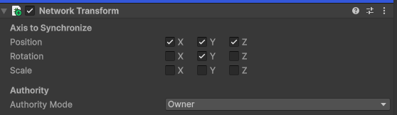
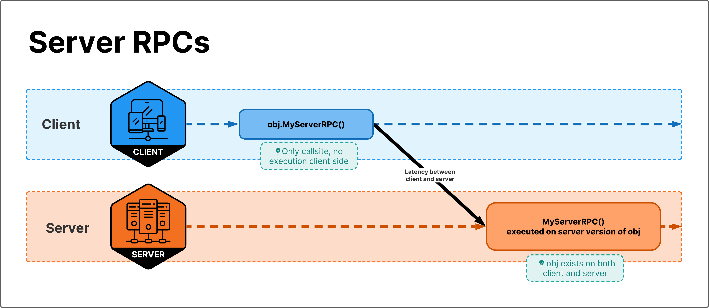
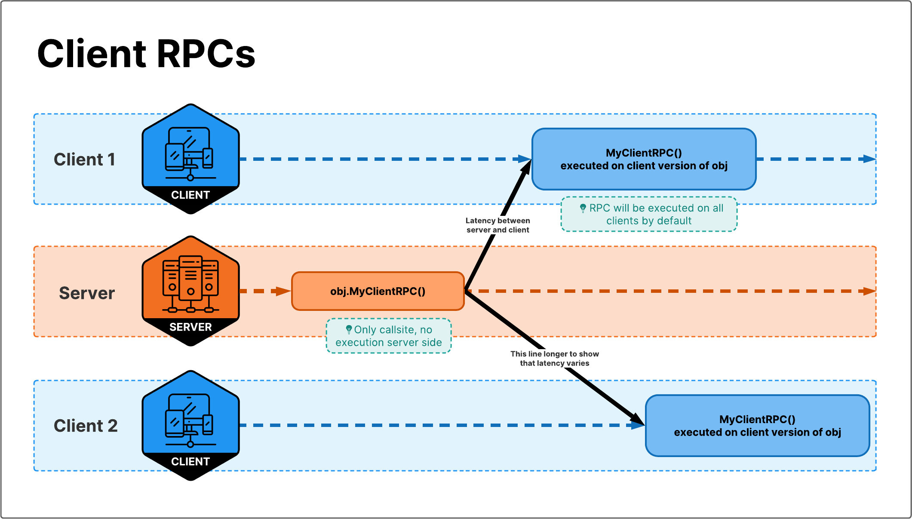

3.3 Netcode i RPCs
En aquesta secció, explorarem el concepte de Remote Procedure Calls (RPCs) en el context de Netcode for GameObjects. Les RPCs són una eina essencial per a la comunicació entre clients i servidors en jocs multijugador, permetent que les funcions es cridin remotament a través de la xarxa.
Controlant cada transform per separat
En primer lloc anem a sol·lucionar el problema de que el host controle ambdos personatges.
La solució passa per fer el Network Trnaform del Player Owner Athoritative. Això vol dir que cada client controla el seu propi transform i el servidor només sincronitza les dades.

Comprova que ara cada player només controla el seu propi transform. Encara tenim el problema de que les animacions no es sincronitzen, però això ho solucionarem més endavant.
RPCs
Qualsevol procés es pot comunicar amb qualsevol altre procés enviant una crida a procediment remot (RPC, Remote Procedure Call). L'atribut Rpc és l'atribut recomanat per utilitzar en declarar mètodes RPC i els seus paràmetres defineixen els receptors i els drets d'execució del mètode RPC.


Es pot declarar un RPC marcant un mètode amb l'atribut [Rpc] i incloent-hi el sufix Rpc al nom del mètode. Els RPC tenen diversos objectius possibles que es poden declarar tant en temps d'execució com en temps de compilació, però cal passar un valor per defecte a l'atribut [Rpc]. Per exemple, per crear un RPC que s'executarà en un servidor:
1 2 3 4 5 | |
Warning
Si s'omet el sufix Rpc, el mètode no es reconeixerà com a RPC i no es podrà cridar remotament.
1 2 | |
Els RPC es poden invocar com una funció qualsevol:
1 2 | |
Targets RPC
Hi ha diverses destinacions (targets) predeterminades. Algunes d'aquestes només estan disponibles en contextos client-servidor.
Tot i que les RPC de client a client es poden executar, és important tenir en compte que no hi ha connexions directes entre clients. Quan s'envia una RPC de client a client, la RPC s'envia al servidor que reenvia el mateix missatge RPC a tots els clients de destinació.
| Target | Descripció |
|---|---|
SendTo.Server |
Envia al servidor, independentment del propietari. S'executa localment si s'invoca al servidor. |
SendTo.NotServer |
Només client-servidor Envia a tothom excepte al servidor. No s'enviarà a un servidor que s'executa en mode host; encara es tracta com a servidor. Si voleu enviar als servidors quan són host, però no quan són servidors dedicats, utilitzeu SendTo.ClientsAndHost. S'executa localment si s'invoca en un client. No s'executa localment si s'invoca en un servidor que s'executa en mode host. |
SendTo.Owner |
Envia al propietari actual de l'objecte de xarxa. S'executa localment si el procés local és el propietari. |
SendTo.NotOwner |
Envia a tothom excepte al propietari actual. S'executa localment si el procés local no és el propietari. En mode host, l'amfitrió rep aquest missatge dues vegades: una vegada al client host, una vegada al servidor host. |
SendTo.Me |
Executa aquest RPC localment. Normalment, això no és diferent d'una crida de funció estàndard. |
SendTo.NotMe |
Envia aquest RPC a tothom excepte a la màquina local. |
SendTo.Everyone |
Envia aquest RPC a tothom. S'executa localment. |
SendTo.ClientsAndHost |
Envia aquest RPC a tots els clients, inclòs el host, si existeix un host. Si el servidor s'executa en mode host, això és el mateix que SendTo.Everyone. Si el servidor s'executa en mode de servidor dedicat, això és el mateix que SendTo.NotServer. |
SendTo.SpecifiedInParams |
Aquest RPC no es pot enviar sense passar un objectiu a RpcSendParams. |
Atributs RPC antics
En versions anteriors de Netcode for GameObjects, es feia servir l'atribut ServerRpc per a les crides al servidor i ClientRpc per a les crides als clients. Aquestes encara són compatibles, però es recomana utilitzar l'atribut Rpc amb els paràmetres de destinació per a una major flexibilitat i claredat.
Identificant el tipus de NetworkObject
En alguns casos, pot ser útil identificar el tipus de NetworkObject que està cridant un RPC. Per exemple, si tens diferents tipus de personatges o objectes en el teu joc, pots voler executar lògiques específiques basades en el tipus d'objecte que està enviant la RPC.
Per fer això tenim els següents mètodes:
| Mètode | Descripció |
|---|---|
IsServer() |
Retorna true si el procés actual és un servidor. |
IsClient() |
Retorna true si el procés actual és un client. |
IsHost() |
Retorna true si el procés actual és un host |
IsOwner() |
Retorna true si el procés actual és el propietari de l'objecte de red. |
IsSpawned() |
Retorna true si l'objecte de red està actualment a la xarxa. |
Aquest mètodes pertanyen a la classe NetworkBehaviour de la qual hauria d'heretar el nostre script.
Exemple:
1 2 3 4 5 6 7 8 9 10 11 | |
Targets personalitzats
Si necessiteu enviar a un ID de client específic o a una llista d'IDs de client que no estan coberts per cap dels targets existents, podeu utilitzar els mètodes següents:
1 2 3 4 5 6 7 8 9 10 11 12 13 14 15 16 17 18 19 | |
Esdeveniments (Events)
En Unity podem utilitzar els esdeveniments (Events) de C# per a gestionar la comunicació entre diferents components del nostre joc, sense necessitat de que cada component tinga una refewrència d'un altre component. Això és especialment útil en jocs multijugador, on diferents objectes poden necessitar reaccionar a esdeveniments específics que ocorren en el joc.
-
Esdeveniment (Event); són declaracions dins d'una classe que defineixen un tipus d'esdeveniment. Per exemple:
1 2 3
public class Player : NetworkBehaviour { public event Action OnPlayerDeath; } -
Delegats (Delegates); són tipus de dades que representen referències a mètodes. Permeten que els mètodes es passen com a paràmetres o s'assignin a variables. Per exemple:
1public delegate void OnPlayerDied(); -
Suscriptors i publicadors: els components que volen reaccionar a un esdeveniment es converteixen en suscriptors, mentre que el component que genera l'esdeveniment és el publicador. Per exemple:
1 2 3 4 5 6 7 8 9 10 11 12 13 14 15 16
public class Enemy : NetworkBehaviour { private Player player; private void Start() { player = FindObjectOfType<Player>(); player.OnPlayerDeath += HandlePlayerDeath; // Subscripció a l'esdeveniment } private void HandlePlayerDeath() { // Lògica per quan el jugador mor } private void OnDestroy() { player.OnPlayerDeath -= HandlePlayerDeath; // Desubscripció a l'esdeveniment per evitar fugues de memòria } }
Declarant i invocant esdeveniments
En Unity, els esdeveniments es poden declarar i invocar de diferents formes.
1. Declarar un delegat i un esdeveniment:
1 2 | |
2. Declarar un event utilitzant Action:
1 | |
Action:
1 | |
Action
Action és un tipus de delegat genèric que es pot utilitzar per a esdeveniments sense paràmetres o amb paràmetres. Per exemple, Action és un delegat que no té paràmetres, mentre que Action<int> és un delegat que accepta un paràmetre de tipus int.
Per usar Action en el teu codi, assegura't d'incloure el namespace System (using System;).
Animant cada player per separat
Per a animar cada player per separat, primer hem d'afegir el component NetworkAnimator al player. Aquest component s'encarrega de sincronitzar les animacions entre el client i el servidor.
Si ara poses en marxa el joc, veuràs que encara tenim el mateix problema:
- Jugador 1 (local) es mou i l'animació funciona perfectament en la meua pantalla
- Jugador 2 (el remot) es mou, però jo NO veig la seua animació a la meua pantalla
Per què? Perquè la informació del moviment (l'input que fa) no viatja per la xarxa automàticament. Hem de fer-ho nosaltres.
El primer que hem de fer és canviar l'herència del nostre script de moviment perquè herete de NetworkBehaviour en lloc de MonoBehaviour. Això ens permetrà utilitzar les funcions de xarxa que ens ofereix Netcode for GameObjects.
1 2 3 4 5 | |
PAS 1: Crear una VARIABLE DE XARXA (NetworkVariable)
1 2 3 | |
Què significa això?
| Terme | Significat |
|---|---|
NetworkVariable<float> |
Una variable que es sincronitza per xarxa automàticament |
0f |
Valor inicial (0) |
ReadPermission.Everyone |
Tots els jugadors poden rebre els canvis |
WritePermission.Owner |
NOMÉS el jugador propietari del personatge pot enviar canvis |
Es com una pantalla compartida en línia
Tots veuen la pantalla (ReadPermission.Everyone)
Però només TÚ pots escriure en ella (WritePermission.Owner)
Per què WritePermission.Owner?: Així evitem que els hackers envien valors falsos pel seu compte. NOMÉS el propietari pot moure el seu personatge.
PAS 2: Subscriure's als CANVIS de la variable
1 2 3 4 5 6 7 | |
OnNetworkSpawn() és un mètode que s'executa automàticament quan el personatge apareix en la xarxa.
Cada vegada que netSpeed canvia (el jugador remot envia un nou valor), automàticament es crida la funció OnSpeedChanged().
També hem de desfer la subscrició quan el personatge desapareix per evitar problemes de memòria:
1 2 3 4 5 6 7 | |
OnNetworkDespawn() es crida quan el personatge desapareix de la xarxa.
PAS 3: Actualitzar el ANIMATOR
1 2 3 4 5 6 7 8 9 10 11 | |
Com funciona?:
- El propietari envia
netSpeed.Value = 0.5f(està corrent) - Tots els altres reben automatalment este canvi
- S'executa
OnSpeedChanged(previous=0f, current=0.5f) - L'animator canvia:
SetFloat("Speed", 0.5f) - L'animació canvia automàticament al clip de córrer
PAS 4: El propietari ENVIA la informació
1 2 3 4 5 6 7 8 9 10 11 12 13 14 15 16 17 18 19 20 21 22 23 24 25 26 27 28 29 30 31 32 33 34 | |
Per què ho fem així?:
| Acció | On es fa | Explicació |
|---|---|---|
animator.SetTrigger(Kick) |
LOCAL | El meu personatge pateja al moment |
KickServerRpc() |
XARXA | S'envia el RPC al servidor perquè els altres jugadors el reben i actualitzen les seues animacions |
animator.SetFloat("Speed", input.y) |
LOCAL | Sense retard, el meu personatge es mou al moment |
netSpeed.Value = input.y |
XARXA | Els altres reben la informació |
Si la xarxa és lenta, les animacions locals es veuen a l'instant, mentre que les remotes poden tindre un poc de retard.
PAS 5: Els REMOTS reben automàticament:
graph TD
A["<b>JUGADOR 1</b> (Jo)<br/>━━━━━━━━━━━━<br/>• Prem moure (input.y = 1)<br/>• SetFloat('Speed', 1) - LOCAL<br/>• netSpeed.Value = 1 - PER XARXA"]
B["<b>JUGADOR 2</b> (Remot)<br/>━━━━━━━━━━━━<br/>• Rep netSpeed = 1<br/>• S'executa: OnSpeedChanged()<br/>• SetFloat('Speed', 1) - AUTOMÀTIC<br/>• Veu l'animació del rival"]
A -->| xarxa | B
style A fill:#4CAF50,stroke:#2E7D32,stroke-width:2px,color:#fff
style B fill:#2196F3,stroke:#1565C0,stroke-width:2px,color:#fffRESUM: Els 5 PASSOS per sincronitzar animacions:
NetworkVariable<float> netSpeed: Crear variable de xarxanetSpeed.OnValueChanged += OnSpeedChanged;Subscriure's a les actualitzacions de la variable per rebre els canvisOnSpeedChanged(float prev, float curr): Actualitzar animator quan canvianetSpeed.Value = input.yEnviar el valor per xarxa- Automàtic: Els remots reben i actualitzen
sequenceDiagram
actor P as PROPIETARI
participant A as Animator Local
participant N as netSpeed (Xarxa)
participant R as REMOTS
participant AA as Animator Remot
P->>P: 1. Lee input (moveAction)
P->>A: 2. SetFloat("Speed", value)
Note over A: Animació local instant
P->>N: 3. netSpeed.Value = input.y
N-->>R: 4. Sincronització per xarxa
R->>R: 5. OnSpeedChanged() es crida
R->>AA: 6. SetFloat("Speed", value)
Note over AA: Animació remota sincronitzada Ens queda per analitzar les animacions de patada, però el procés és el mateix: el propietari envia un RPC al servidor (KickServerRpc), el qual reenvia la informació a tots els clients, excepte al propietari (KickClientRpc) perquè actualitzen les seues animacions de patada.
1 2 3 4 5 6 7 8 9 10 11 12 | |
sequenceDiagram
participant Owner as PROPIETARI<br/>(Client)
participant Server as SERVIDOR
participant OtherClient as ALTRES CLIENTS<br/>(Remots)
Owner->>Owner: 1. kickAction.action.triggered
Note over Owner: L'usuari prem el botó de patada
Owner->>Owner: 2. animator.SetTrigger(Kick)
Note over Owner: L'animació de patada es veu localment
Owner->>Server: 3. KickServerRpc()
Note over Owner,Server: RPC cridat: SendTo.Server
Server->>Server: 4. Procesa KickServerRpc()
Note over Server: El servidor rep la petició
Server->>OtherClient: 5. KickClientRpc()
Note over Server,OtherClient: RPC cridat: SendTo.NotOwner
OtherClient->>OtherClient: 6. animator.SetTrigger(Kick)
Note over OtherClient: L'animació de patada es veu als remots